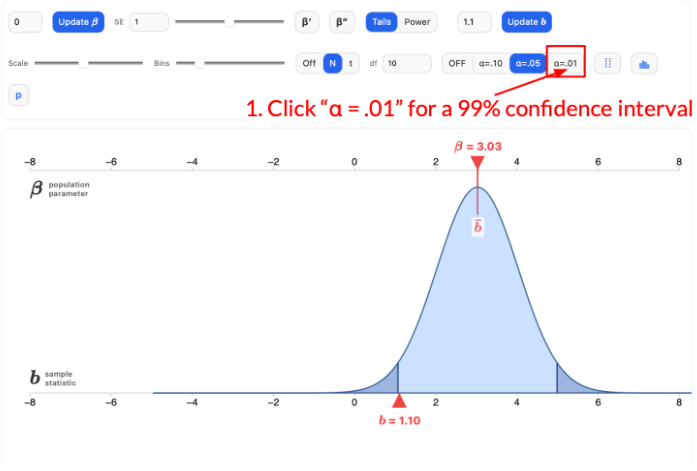
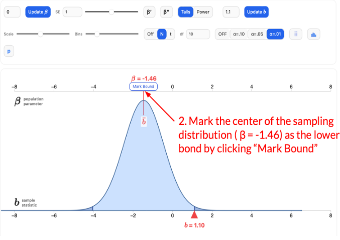
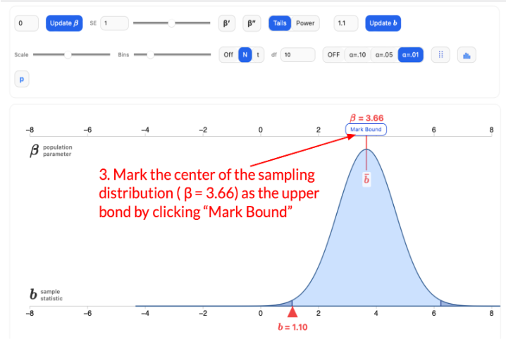

A confidence interval app is displayed under Step 2. After you finish your construction, review Steps 3 and 4 to see the correct solution. If your interval is incorrect, revise your work in the confidence interval app based on the explanations provided in those steps. Your activity in the app will be recorded. To receive extra credit, it is important that you complete all steps and fully engage with the activity.
Step 1. Change the α value for a 99% confidence interval. Notice how the coloring of the sampling distribution changes when you change α from .05 to .01.

Step 2. Move the sampling distribution to find the lower bound and upper bound of the 99% confidence interval.
Complete Step 1 and 2 in the app below.
What is the 99% confidence interval?
Step 3. Mark the lower bound of the 99% confidence interval.

Step 4. Mark the upper bound of the 99% confidence interval.
